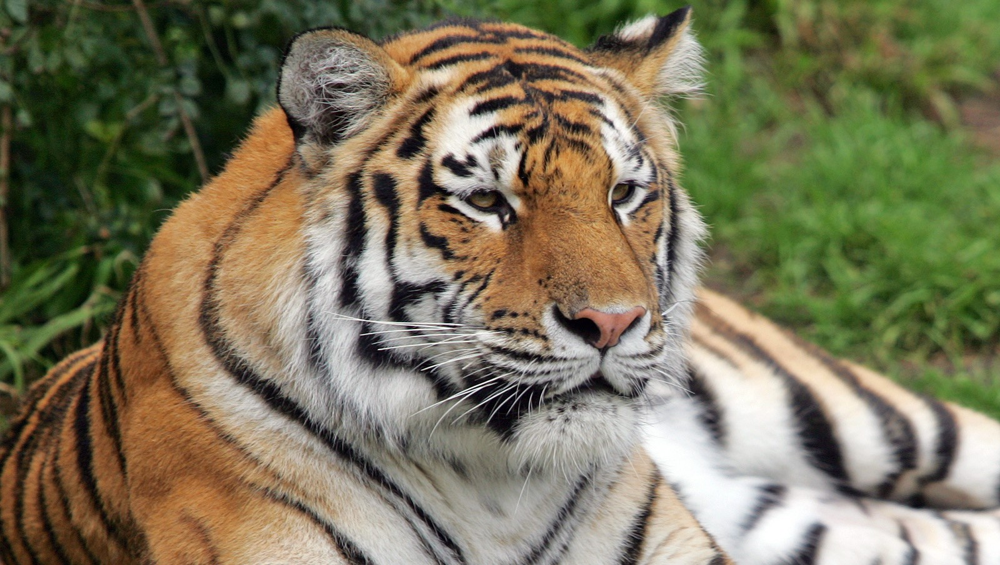
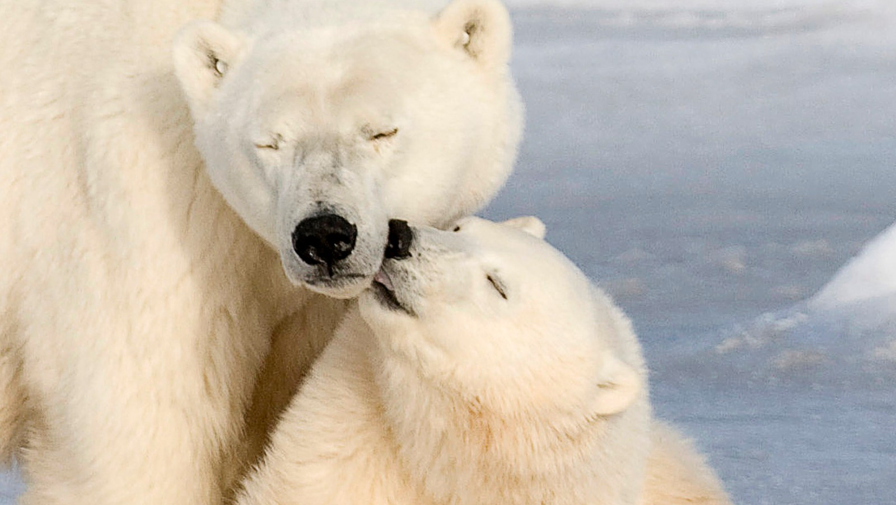
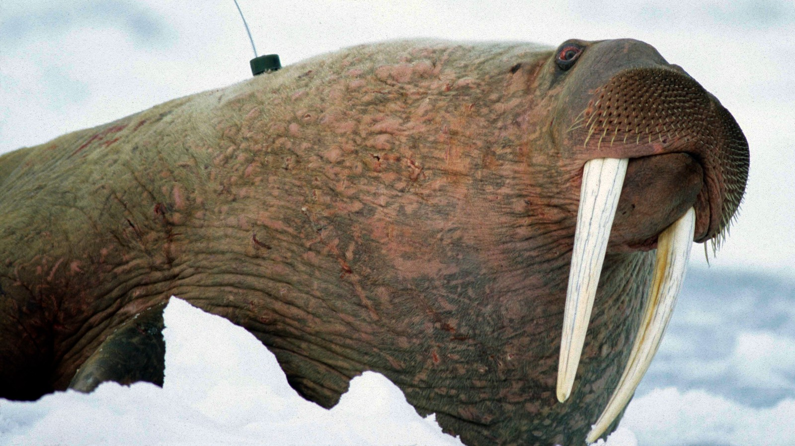
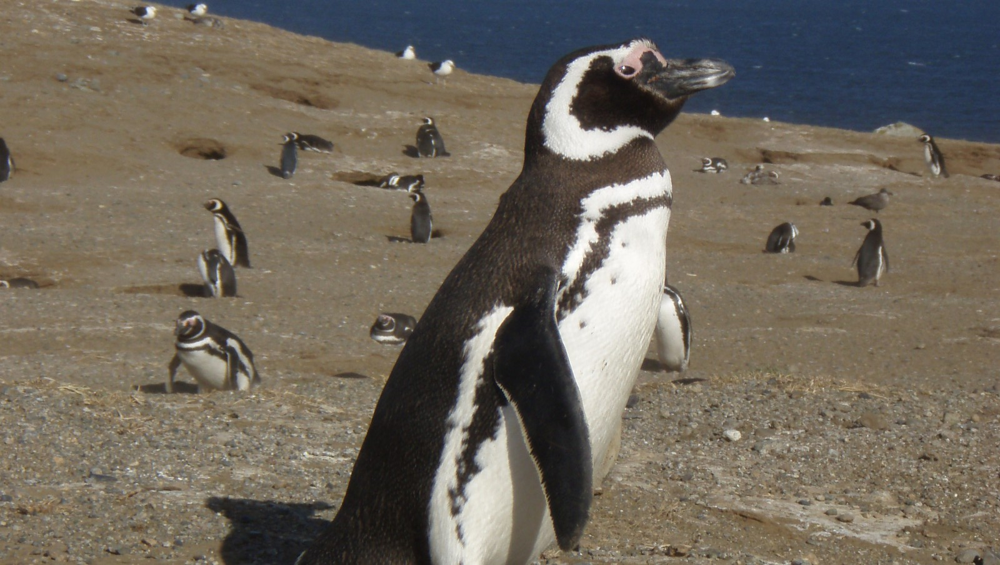
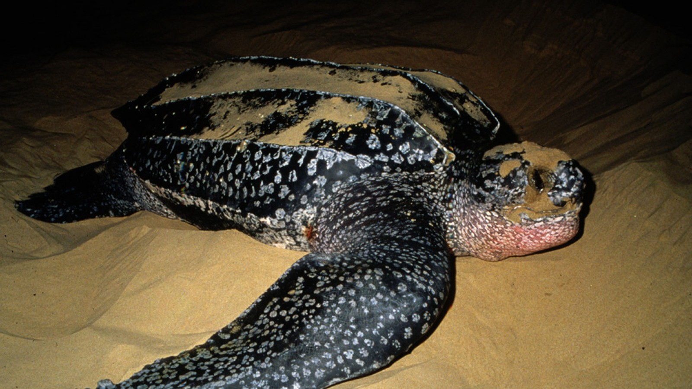

Utrydningstruede dyr
Her er 5 av de mest trudede dyreatrene i verden
-
Så lite som 3200 tigre lever utenfor fangenskap ifølge en ny studie. Avskoging og ulovlig jakt er blant truslene mot underartene av tigeren.

-
Isbjørner mister leveområder på grunn av issmelting i arktiske strøk, sier WWF. Majestetene er blitt symboler på klimaendringer.

-
I høst ble 200 døde stillehavshvalrosser funnet døde nordvest i Alaska. Arten som lever ved Beringstredet er truet av klimaendringer.

-
Magellanpingvinene trues av oljesøl og mangel på fisk i havet. I fjor strandet hundrevis av utslitte og døde pingviner på Rio de Janeiros strender.

-
Den største av de marine skilpaddene, havlærskillpadda, har overlevd flere hundre millioner år. Trues nå av fiske og klimaendringer.

Kilde:
NRK.no